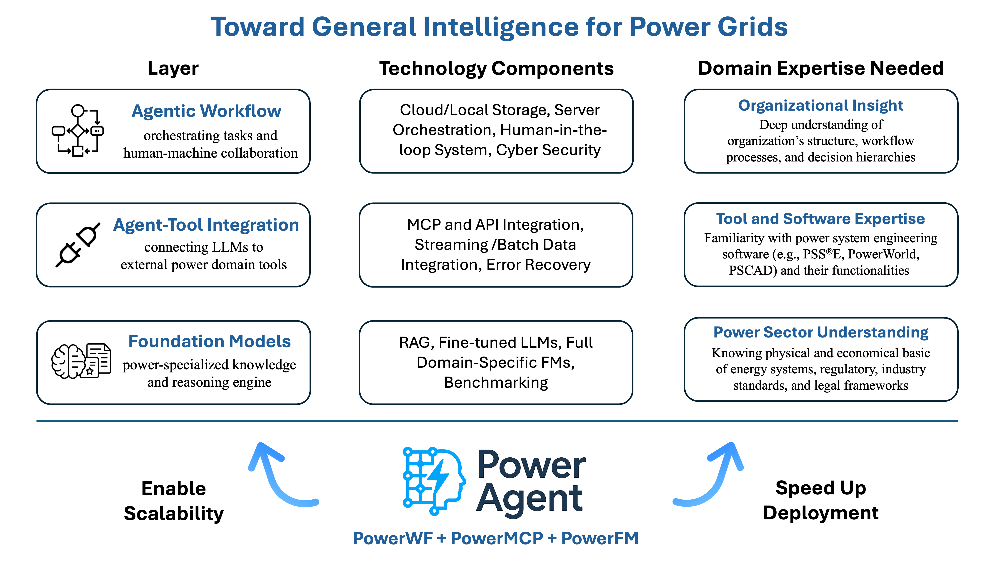

Introduction
Power Agent is an open-source community dedicated to accelerating the development of LLM-powered Tools and Agentic AI in the power systems domain. We aim to bridge the gap between cutting-edge AI and the real-world needs of system operators, electric utilities, and researchers, by creating a shared ecosystem of protocols, models, and workflows tailored for power applications.
We believe the future of agentic AI in power domain will be driven by the combined development and coordination of three key components — Foundation Models (FM), Model Context Protocol (MCP), and Workflows (WF).
PowerFM
Fine-tuned LLMs for power system tasks, full domain-specific Foundation Models (FMs), and benchmarking for model performance
PowerMCP
Protocols enabling LLMs to control and interact with power domain software and tools
PowerWF
Modular agentic workflows for orchestrating models, tools, and decisions
Motivation
The rapid rise of LLMs and agentic frameworks has opened new frontiers in intelligent software. Inspired by the success of open-source initiatives in LLMs (like DeepSeek, LlaMA) and agentic control protocols (especially Anthropic's MCP community), we believe it's time to bring the same spirit of innovation and openness to the power systems domain.
Vision
Toward General Intelligence for Power Grids through Open-Source Community
We are building a comprehensive ecosystem based on three interconnected layers: workflow automation, tool integration, and domain-specialized foundation models. Through this layered architecture, we aim to deliver scalable and intelligent solutions, accelerate the deployment of agentic AI systems, and foster an open, collaborative community within the power sector.
Community
Like other open-source communities, Power Agent is built by and for the community. GitHub was chosen as the home of this initiative to enable transparent, global collaboration.
Curated by the Power and AI Initiative (PAI) at Harvard SEAS, all contributions are reviewed to ensure they are relevant and open-source, utility, and integrity. We invite researchers, engineers, and developers across disciplines to take part in shaping this ecosystem.
🔓 Simple and Unrestricted Access
To keep Power Agent accessible with minimal effort, all current benchmarks are maintained and tested using Cursor, one of the most popular agentic coding IDEs. In the interest of open collaboration and replicable experiments, all Power Agent code are distributed under the MIT license. While not required, we appreciate credit or acknowledgment of the original creators when reusing or building upon these resources.
For academic use, please cite the following paper:
Le Xie, Qian Zhang., "Toward Agentic Intelligence for Power Grids through Open-Source Community", working paper, 2025.
How to Contribute
Power Agent is a collaborative community-driven initiative. Power Agent users are encouraged to fork benchmark repositories and modify them for their own purposes and then contribute their enhancements back to the broader community via pull requests.
To join the Power Agent organization or ask questions about contributions, please reach out to the administrator: Qian Zhang (qianzhang@g.harvard.edu)